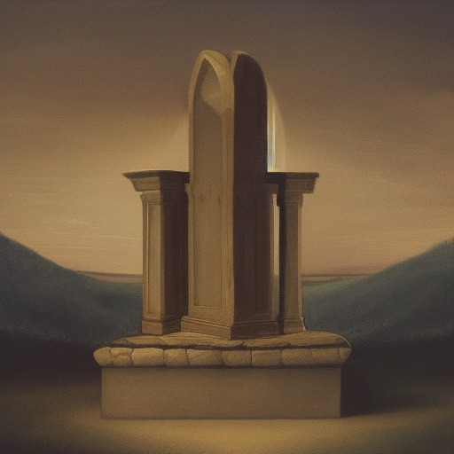

You place your sword upon the altar
As the paladin places the Sword of Light upon the Whispering Altar, the catacomb's ambient noise fades into a profound silence. The runes on the altar begin to glow with an ethereal light, perfectly matching the luminescence of the sword. The entire chamber is illuminated, revealing intricate murals on the walls depicting valiant warriors in battles long forgotten.
Suddenly, spectral figures begin to emerge from the walls – the spirits of the fallen warriors depicted in the murals. They form a circle around the altar, their hollow eyes fixed upon the paladin. The foremost spirit, a tall figure in majestic armour, steps forward.
The spirit introduces himself as Sir Cedric, a paladin from a bygone era. He speaks, his voice echoing with wisdom and authority, "Brave soul, by placing your weapon upon this altar, you have invoked the Council of the Elders. Ask, and we shall provide guidance.

Ask Sir Cedric for more information
Inquire about legendary artefacts